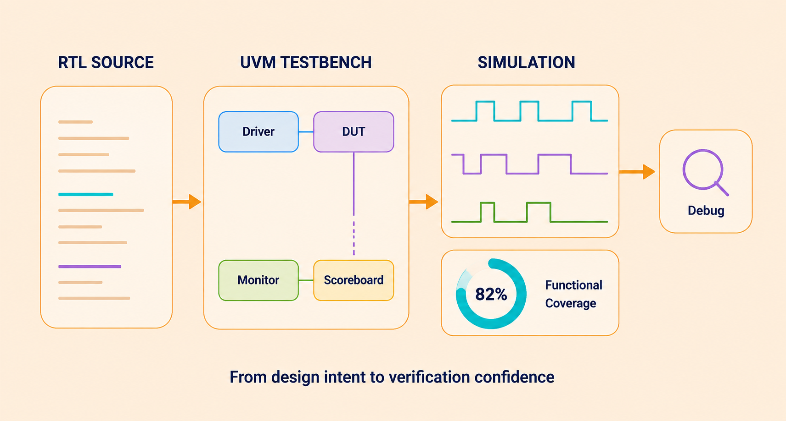

FRONT-END
RTL Design & Design Verification
We support the development and verification of digital designs from RTL through functional and verification closure. Our engineers can work on individual blocks, interfaces or larger subsystem environments, depending on project scope.

From design intent to verification confidence
What we support
- Verification planning and test strategy
- SystemVerilog / UVM environments
- Testbench and sequence development
- Assertions and functional coverage
- Regression and failure analysis
Typical challenges
- Coverage gaps
- Complex corner-case failures
- Regression instability
- Debug turnaround time
- Late verification closure
Client deliverables
- Reusable verification components
- Test and regression results
- Coverage analysis
- Failure root-cause reports
- Closure status and recommendations
Engineering outcomeBetter verification visibility, faster debug cycles and a structured path towards functional closure.